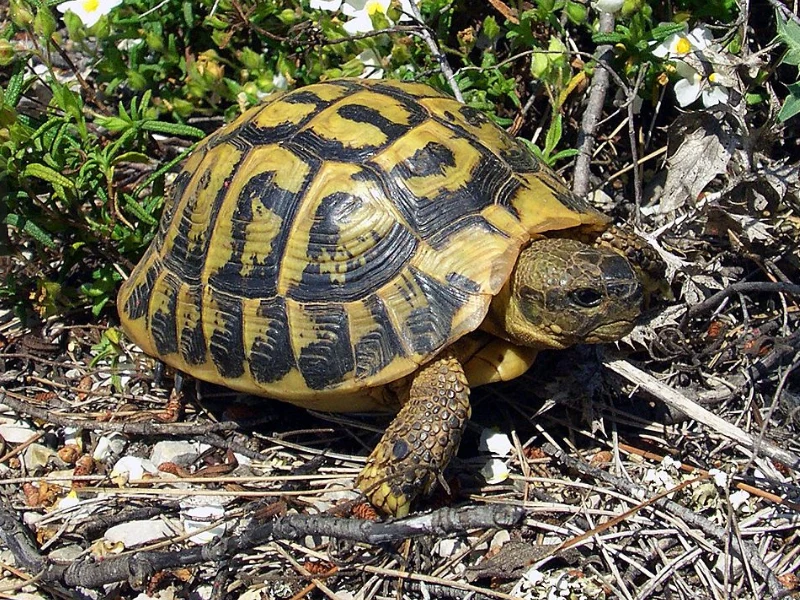

ヘルマンリクガメの基亜種にして西側・小型側。イタリア・南フランス・スペイン北東部と地中海の島々に分布する。鮮やかな黄金色と黒のコントラストが美しく、流通は少なくEUCB中心で高価。CITES II。

幼体期から地色の黄色が明るく、成長とともに黒斑とのコントラストがはっきりしてくる。バスキングと採食を繰り返す暮らしはヒガシ亜種と同じだが、体はひと回りコンパクト。じっくり育てる楽しみが大きい亜種。
ニシ亜種は成体でもおおむね18cm以下にとどまり、ヒガシ亜種（メス19〜23cm・最大28cm級）より明確に小型。90cm級の飼育スペースでも成体を無理なく維持しやすいのが、住宅事情の厳しい日本ではありがたい点。
ニシ亜種は高価なぶん、亜種ラベルの誤り（意図的か否かを問わず）が起きた時の損失が大きくなります。腹甲の2本のつながった黒帯・眼下の黄色斑・小柄な体型という識別点を購入前に自分で確認し、産地系統の説明ができる販売者から迎えてください。
ニシヘルマンリクガメは、ヘルマンリクガメ（Testudo hermanni）の基亜種 Testudo hermanni hermanni（Gmelin, 1789）です。TTWGチェックリスト（2021・2025）とReptile Databaseの双方が有効な亜種として扱っています。
地中海の西側——イタリア半島の中南部・シチリア・サルデーニャ・コルシカ・南フランス沿岸・スペイン北東部・バレアレス諸島（メノルカなど）に、断片的に分布します。ヒガシ亜種との境界はイタリア北東部のポー平原付近です。生息地は日当たりのよい地中海低木林や沿岸の乾いた丘で、開発による生息地の減少から野生個体群の保全が課題になっています。
「ニシヘルマンかどうか」は次の3点で確認します。高価な亜種なので、購入前に自分の目で確かめることを強くおすすめします。
| 識別点 | ニシ（hermanni） | ヒガシ（boettgeri） |
|---|---|---|
| 腹甲の黒帯 | 2本のつながった黒帯が明瞭 | 途切れて不連続・薄い個体も多い |
| 目の下の黄色斑 | あることが多い（サブオキュラースポット） | 通常なし |
| 地色 | 鮮やかな黄金色＋濃い黒斑 | オリーブ〜くすんだ黄色 |
| 成体サイズ | 小型（おおむね18cm以下） | 大型（メス19〜23cm・最大28cm級） |
← 横にスクロールできます
雌雄差：メスはオスより大きく育ちます。オスは尾が長く太く、腹甲後部の切れ込みが深めです。幼体での判別は困難です。
基本的な行動はヒガシ亜種と共通で、日光浴と採食を軸によく歩きます。小柄なぶん動きは軽快な印象です。EUCB個体は人の暮らしに馴染んだ血統が多く、環境が安定すれば給餌への反応も良好です。希少な亜種だからといって特別に神経質なわけではありませんが、「体調を崩さない環境を保つ」ことの価値がヒガシ亜種以上に高いのは意識しておきたい点です。
ケージの作り方の基本（乾燥・温度勾配・強いUVB）はヒガシ亜種と共通です。亜種単位で異なる公式な飼育数値は確認できないため、当サイトでは種共通の目安を示し、差がある部分（サイズ・冬の扱い）だけを亜種単位で書き分けています。地中海西部の暖かい沿岸原産であることから、冬の低温には余裕を持った保温管理をおすすめします。
野草と葉物野菜を中心にした高繊維・低タンパクの草食です。タンポポ・オオバコ・シロツメクサなどの野草を軸に、葉物野菜を組み合わせ、市販フードは補助にとどめます。果物の常用は避けます。カルシウム剤の添加とUVBの併用が基本です。小型亜種は「食べさせすぎ」の影響が体格に出やすいので、量より質と継続を優先してください。
原産地では冬に休眠する亜種です。地中海西部の沿岸は冬も比較的温和なため、ヒガシ亜種（大陸性の寒さを経験する系統を含む）ほど深く長い冬眠を前提にしない管理が無難です。
EUでは系統別のCB繁殖が確立しており、日本に入るのはその子どもたちです。1回の産卵数はヒガシ亜種より少ない傾向が報告されています（TFTSG種アカウント）。孵卵温度によって性が決まる（温度依存性決定）ことが知られています。国内での繁殖を目指す場合は、同じ地域系統のペアを揃えることがEUブリーダーの標準的な考え方です。
流通は少なく、EUCB個体が中心です。ヒガシ亜種より明確に高価で、専門店やイベントで「ニシヘルマン」「地域系統名付き」で販売されます。価格差があるぶん亜種ラベルの確認が重要です。識別点（腹甲の連続黒帯・眼下斑）を確認し、系統・親個体の情報を説明できる販売者から迎えてください。
飼育自体は中級（ヒガシ亜種と同等）。ただし手に入れにくさは上級者向けです。小型で扱いやすく、飼い方も定番の乾燥系です。一方で価格が高く、亜種同定の目が求められるため、「最初の1匹」にはヒガシ亜種の方が始めやすいのも事実です。色彩と希少性に価値を感じる方には、長く付き合うほど満足度の高い亜種です。
← 横にスクロールできます
| 名前 | 甲長 | 難易度 | 冬眠 | 特徴 |
|---|---|---|---|---|
| ニシヘルマン このページ | おおむね18cm以下 | 中級 | 可（短め・慎重に） | 小型・鮮色・EUCBのみで高価 |
| ヒガシヘルマン | 15〜23cm（最大28cm級） | 中級 | 可（通年加温も可） | 大型側・CB流通の主流 |
| ヘルマンリクガメ（親種ページ） | 15〜23cm | 中級 | 可 | 種全体の解説 |
| ロシアリクガメ | 15〜20cm | 入門〜中級 | 可 | 入門定番・穴掘り名人 |
飼育温度・湿度などの数値は、亜種単位の一次資料が乏しい項目について地中海系リクガメの一般的な目安を含みます。その場合は断定を避けています。